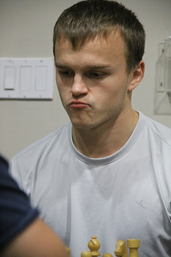

Inicio / Noticias
4to Torneo del Grand Prix
1. Derecho de participación
- Jugadores con bandera panameña.
- Será requisito obligatorio tener membresía activa con la Federación de Ajedrez de Panamá (FAP), no habrán excepciones.
2. Lugar y fecha
Se realizara en Van der’s Chess Club, los días 12, 13, 14, 15 y 16 de Febrero. El sorteo se realizara el día 11 de Febrero a las 8 pm en el Van der’s Chess Club. Sólo se podrá cambiar la sede del torneo con la autorización del Director del Torneo.
3. Tipo de Torneo
Abierto, sistema suizo a 7 rondas. Válido Para Elo Fide.
Control de tiempo: 90 minutos para cada jugador +30 segundos de incremento desde la primera jugada; tiempo de espera: 30 minutos.
4. Inscripción
Las inscripciones tendrán un costo de USD$20.00 (veinte dólares). Las mismas serán recibidas por la Federación de Ajedrez de Panamá en Van der’s Chess Club (Tel. 265-2921).
Adicionalmente la organización impondrá una multa de USD$20.00 a los jugadores que se han retirado de torneos anteriores sin excusa válida.
5. Calendario de juego
1ra ronda miércoles 12 de febrero a las 19:00 horas.
2da ronda jueves 13 de febrero a las 19:00 horas.
3ra ronda viernes 14 de febrero a las 19:00 horas.
4ta ronda sábado 15 de febrero a las 14:00 horas.
5ta ronda sábado 15 de febrero a las 19:00 horas.
6ta ronda domingo 16 de febrero a las 10:00 horas.
7ma ronda domingo 16 de febrero a las 15:00 horas.
6. Desempates
Para los jugadores que soliciten un BYE debe quedar claro que por defecto quedarán al final de la tabla de posiciones a ese nivel y este criterio, para su desventaja, tendrá prioridad antes de aplicarse cualquiera de los siguientes criterios de desempate con otros jugadores de igual puntaje, independientemente de su resultado frente a ellos. Luego para desempatar se aplicarán los tres primeros criterios de desempate que aparecen a continuación, después de terminada la última ronda:
a) Suma de la puntuación progresiva
b) Mayor Buchholz
c) Mayor Sonneborn-Berger
La mujer que obtenga mejor resultado indivual será la jugadora oficial de Panamá en el torneo subzonal de Nicaragua.
7. Premiación
1er lugar: 40% de la inscripción
2do lugar: 25% de la inscripción
3er lugar: 15% de la inscripción
8. Comisión Técnica
AF José Carrillo Pujol
9. Reglamento
Se utilizaran las leyes de la FIDE.
3er Torneo del Grand Prix
1.- Derecho de participación:
- Jugadores con bandera panameña.
- Será requisito obligatorio tener membresía activa con la FAP, no habrá excepciones.
2.- Lugar y fecha:
Se realizará en Van der’s Chess Club, los días 9, 10, 11 y 12 de Enero de 2014. El sorteo se realizará el día 7 de Enero a las 8pm en Van der’s Chess Club. Sólo se podrá cambiar la sede del torneo con la autorización del Director del Torneo (Alhan Carrera O.).
3.- Tipo de Torneo
Abierto, Sistema Suizo a 7 rondas. Válido ara Rating Elo FIDE
4.- Inscripción
Las inscripciones tendrán un costo de USD$20.00 (veinte dólares solamente). Las mismas serán recibidas por la Federación de Ajedrez de Panamá en Van der’s Chess Club (Tel. 265-2921).
Adicionalmente la organización exigirá una fianza de USD$20.00 a los jugadores que se han retirado de torneos anteriores sin excusa válida.
5.- Calendario de juego
1ra ronda jueves 9 de enero a las 14:00 horas.
2da ronda jueves 9 de enero a las 19:00 horas.
3ra ronda viernes 10 de enero a las 19:00 horas.
4ta ronda sábado 11 de enero a las 14:00 horas.
5ta ronda sábado 11 de enero a las 19:00 horas.
6ta ronda domingo 12 de enero a las 10:00 horas.
7ma ronda domingo 12 de enero a las 15:00 horas.
6.- Desempates
Para los jugadores que soliciten un BYE debe quedar claro que por defecto quedarán al final de la tabla de posiciones a ese nivel y este criterio, para su desventaja, tendrá prioridad antes de aplicarse cualquiera de los siguientes criterios de desempate con otros jugadores de igual puntaje, independientemente de su resultado frente a ellos. Luego para desempatar se aplicarán los tres primeros criterios de desempate que aparecen a continuación, después de terminada la última ronda:
a) Suma de la puntuación progresiva
b) Mayor Buchholz
c) Mayor Sonneborn-Berger
7.- Premiación
1er lugar: 60% de la inscripción
2do lugar: 30% de la inscripción
3er lugar: 10% de la inscripción
8.- Comisión Técnica
AF José Carrillo Pujol
9.- Reglamento
Se utilizaran las leyes de la FIDE.
CONVOCATORIA AL TORNEO
NAVIDEÑO 2013
La Federación de Ajedrez de Panamá tiene el placer de invitarlos a participar del TORNEO NAVIDEÑO 2013 a realizarse los días 14 y 15 de diciembre de 2013 en el Salón de Actos del Colegio Chino Panameño.
BASES DEL TORNEO:
1.- Derecho de participación:
Abierto a todos los Ajedrecistas en todas las categorías.
2.- Lugar y fecha:
Se realizara en los Salón de Actos del Colegio Chino Panameño, a partir del 14 de diciembre hasta el 15 de diciembre de 2013.
3.- Inscripciones:
Las inscripciones tendrán un costo de $7.50 por cada torneo para miembros de la Federación. $15.00 cada torneo será el precio regular. Las mismas serán recibidas en el Van der’s Chess Club.
4.- Cierre de inscripciones
Viernes 13 de diciembre de 2013.
5.- Sistema de competencia y Horarios
Se hará en dos modalidades:
a) Suizo a 7 rondas, 5 minutos por jugador para terminar toda la partida.
b) Suizo a 5 rondas, 15 minutos por jugador para terminar toda la partida
a) El torneo Blitz (5 minutos) iniciará a las 3 pm el día sábado 14
b) El Torneo Ata (15 minutos) iniciará a las 10 am del día domingo 15.
Tiempo de espera 0 minutos a partir de la hora programada, transcurrido ese tiempo se declarara falta y será causa de pérdida de la partida.
6.- Desempates
Progresivo, Buchholz y Sonneborn-Berger.
7.- Premiación.
Cuatrocientos Cincuenta (B/.450.00) Garantizados
Se repartirán 225.00 dólares en cada torneo con la distribución siguiente:
40% 1 lugar 30 % 2 do Lugar 20% Tercer Lugar
8.- Arbitraje
Será designado y contratado por los organizadores del evento.
9. Validez
AMBOS TORNEOS SERAN VALIDOS PARA ELO FIDE.
ALHAN CARRERA ORTEGA
PRESIDENTE – FEDERACION DE AJEDREZ DE PANAMA
BASES PARA TORNEOS CERRADOS VAN DER’s CHESS CLUB 2013
1.- Derecho de participación:
Ocho (8) jugadores invitados por Elo FIDE.
2.- Lugar y fecha:
Se realizará en Van der’s Chess Club, los días 29, 30 de Noviembre y 6, 7 de Diciembre. El sorteo se realizará el día 28 de Noviembre a las 8pm en el Van der’s Chess Club. Sólo se podrá cambiar la sede del torneo con la autorización del Director del Torneo.
3.- Tipo de Torneo
Cerrado. Round-Robin a 7 rondas. Válido Para Elo Fide
4.- Inscripción
La Inscripción a este torneo es gratuita, por invitación. Solamente se cobrará una fianza de 10.00 dólares la cual se devolverá al terminar la 7ma partida siempre y cuando no haya perdido por incomparecencia ninguna partida.
Los jugadores invitados tienen cancelar su fianza a más tardar el día 28 de noviembre a las 7pm. Caso contrario se procederá a invitar a otro jugador.
5.- Calendario de juego
1ra ronda viernes 29 de noviembre a las 19:00 horas.
2da ronda sábado 30 de noviembre a las 14:30 horas.
3ra ronda sábado 30 de noviembre a las 19:30 horas.
4ta ronda domingo 1 de diciembre a las 10:00 horas.
5ta ronda domingo 1 de diciembre a las 15:00 horas.
6ta ronda viernes 6 de diciembre a las 19:00 horas.
7ma ronda sábado 7 de diciembre a las 14:30 horas.
6.- Desempates
Al finalizar la 5ta ronda, se sorteará el orden que prevalecerá en los sistemas de desempate que serán aplicados: Sonneborn-Berger, Número de Victorias y Resultado Particular.
7.- Premiación
1er lugar: USD$275.00
2do lugar: USD$125.00
3er lugar: USD$75.00
8.- Comisión Técnica
AF José Carrillo Pujol y MI Jorge Baúles
9.- Reglamento
Se utilizarán las Leyes de la FIDE.
10.- Observaciones Adicionales
Grupos adicionales se podrán crear bajo las presentes bases, serán identificados por letras en orden alfabético y sus premios serán alrededor del 50% de los premios del Grupo A.
ALEKSANDR RAKHMANOV DE RUSIA CAMPEON DEL PANAMA CHESS OPEN 3.
El Gran Maestro ruso Aleksandr Rakhmanov ha conquistado la 3ra versión del Torneo de Ajedrez Internacional Panama Chess Open. En la versión más cerrada de las 3 realizadas, Aleksandr, terminó empatado en el primer lugar con 7 puntos de 9 posibles.
En total fueron 6 jugadores los que empataron en el primer lugar, sin embargo, el primer criterio de desempate consistente en el Progresivo le fue favorable. El sub campeón del torneo fue Camilo Gómez de Cuba, Maestro Internacional y el 3er lugar se lo llevo el GM peruano Jorge Cori de 18 años.
Rakhmanov quien también se había ganado hace dos días el Torneo de rápidas a 3 minutos donde participo Judit Polgar, tiene 23 años de edad y también en este año venia de ganarse el prestigioso Abierto de Dubái en Emiratos Árabes.
El mejor panameño fue el MI Jorge Baules actual Campeón Nacional.
Los resultados de las primeras mesas y que llevaron a este desenlace fueron los siguientes:
1. GM Jorge Cori (Peru) - GM Isan Ortiz (Cuba) ½ - ½
2. MI Camilo Gómez (Cuba) - GM Alexander Ipatov (Turquía) ½ - ½
3. GM Lazaro Bruzón (Cuba) - GM Yusnell Bacallao (Cuba) 1 - 0
4. GM Aramis Álvarez (Cuba) - GM Aleksandr Rakhmanov (Rusia) 0 - 1
Como se aprecia, la victoria del ruso fue con piezas negras y luego de haberse terminado partidas en las tres primeras mesas lo que dio un toque de suspenso hasta el último minuto al torneo.
Posiciones finales:
1. Rakhmanov (Rusia) 7 puntos
2. Gómez (Cuba) 7 puntos
3. Cori (Perú) 7 puntos
4. Ortiz (Cuba) 7 puntos
5. Bruzón (Cuba) 7 puntos
6. González (Costa Rica) 7 puntos
Tabla completa de resultados en: http://www.chess-results.com/tnr112417.aspx?lan=1&art=4&wi=821